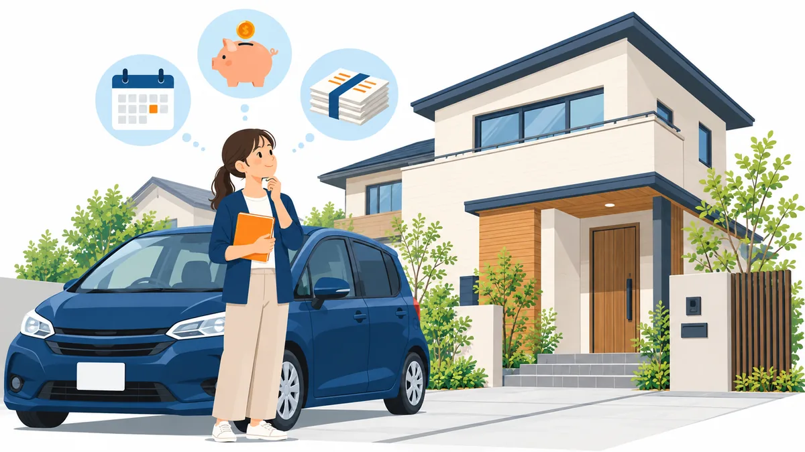

車のローンがあるときの住宅ローンの考え方。残す・先に返す・まとめるの比較

車のローン（マイカーローン）を返済中に住宅の購入を考え始めると、「車のローンが残っていると住宅ローンは組めないのでは」と不安になる方が多くいらっしゃいます。結論からいうと、車のローンがあること自体で一律に不可になるわけではありません。ただし、毎月の返済額は確実に影響します。この記事では、金融機関が車のローンをどう見るかを整理したうえで、「残す」「先に返す」「まとめる」の 3 つの選択肢を比較します。
- 一般的な考え方の整理です。金融機関ごとの基準は公開されておらず、実際の判断は金融機関が行います。
- 計算例の数値は考え方を説明するための仮のものです。
金融機関は車のローンをどう見るか
住宅ローンの検討では、年収に対する年間返済額の割合（返済負担率）が重視されます。この返済額には、これから組む住宅ローンだけでなく、車のローンの毎月の返済額も含めて計算されるのが一般的です。つまり、車のローンの返済が月 3 万円あれば、住宅ローンに使える返済額がその分だけ減ります。
車のローンは、目的が決まったお借入れ（目的型ローン）として扱われます。カードローンのように限度額の範囲で繰り返し借りられるものとは見方が異なり、残高と残りの期間がはっきりしているため、金融機関にとっては把握しやすいお借入れです。この点は、後で触れる「まとめて検討する」場面で関係してきます。
もうひとつ確認されるのが、返済の遅れの有無です。車のローンを含め、過去のお支払いの状況は一定期間の記録として確認されます。遅れがなく返済を続けていることは、それ自体がプラスの材料になります。
計算例: 車のローンが月 3 万円ある場合
年収 450 万円、返済負担率の上限を 35% とすると、年間返済額の上限は 157.5 万円、月額で約 13.1 万円です。
| 住宅ローンに使える月額 | 借入額の目安（年 3%・35 年で計算） | |
|---|---|---|
| 車のローンなし | 約 13.1 万円 | 約 3,400 万円 |
| 車のローン 月 3 万円あり | 約 10.1 万円 | 約 2,600 万円 |
月 3 万円の返済があるだけで、目安が 800 万円ほど変わります。この差をどう扱うかが、次の 3 つの選択肢です。計算の考え方は 返済負担率の計算方法と年収別の目安 で詳しく説明しています。
選択肢 1: 車のローンをそのまま残す
向いている場合: 残りの返済期間が短い、残高が小さい、住宅ローンの希望額が返済負担率の範囲に収まる場合です。
注意点: 借入額の目安が下がった状態で物件を探すことになります。希望の物件価格に届かない場合は、物件を見直すか、他の選択肢を検討します。残りの返済期間が 1〜2 年なら、完済後に住宅ローンを検討するという時間の使い方もあります。
選択肢 2: 先に完済する
向いている場合: 手元資金に余裕があり、完済しても頭金と諸費用を確保できる場合です。完済すれば毎月の返済負担が消え、借入額の目安が戻ります。
注意点: 手元資金が減ると、頭金や諸費用（登記費用・手数料・引越し費用など）に影響します。頭金が減れば住宅ローンの借入額が増え、毎月の返済額と総支払額が上がります。完済で浮く月々の返済額と、手元資金が減る影響を並べて比べる必要があります。完済前に一度ご相談いただくことをおすすめする理由はここにあります。
選択肢 3: 住宅の取得と合わせてまとめて検討する
金融機関や商品によっては、住宅の取得資金に加えて、既存のお借入れの返済に充てる資金を合わせて検討できるものがあります。車のローンは目的型のお借入れなので、こうした商品の対象に含まれる例が比較的多いお借入れです。
向いている場合: 手元資金を頭金に残したい、車のローンの残高が大きい、毎月のお支払いをひとつにまとめて管理したい場合です。
注意点: 3 つあります。
- まとめられる金額には上限があります（500 万円程度、または住宅ローン額の半分以内といった例が多い）。
- 返済期間が住宅ローンと同じ長さになるため、車のローン部分の総支払額は現状より増える可能性があります。車の耐用年数より返済期間が長くなる点も考慮が必要です。
- 住宅の取得以外の目的に充てた部分は、住宅ローン控除の対象外となる場合があります。
商品の型と条件の見方は こちらのコラム にまとめています。
3 つの選択肢の比較
| 残す | 先に返す | まとめる | |
|---|---|---|---|
| 毎月の負担 | 変わらない | 車のローン分が消える | 下がる可能性がある |
| 手元資金 | 変わらない | 減る | 変わらない |
| 総支払額 | 変わらない | 利息が減る | 増える可能性がある |
| 向く状況 | 残高小・残期間短 | 資金に余裕がある | 残高大・頭金を残したい |
相談の前に整理しておくこと
- 車のローンの残高、毎月の返済額、残りの期間、返済の遅れの有無
- 車以外のお借入れ（カードローン・分割払いなど）の一覧
- 頭金に使える手元資金と、残しておきたい金額
- 住まいの希望（エリア・予算・時期）
この 4 点があれば、どの選択肢が合うかをその場で整理できます。